Teaching Point:
Today we will go over the topics of each of our Slides.
Slide Topics
Your slideshow will have a total of 5 slides. The first slide is your Title Slide. After that there are 4 Slides of writing. Your Slide topics are:
- Slide 1: Biography - This slide will be about your explorers life when they weren't exploring. Anything having to do with their lives should go here.
- Slide 2: Why They Are Famous - This slide is about the trips they took that made them famous. Where they explored, when they explored, and why they explored are all facts that should go on this slide.
- Slide 3: Map of their Trip - We will use Google Drawing to make a map showing where your explorer came from and sailed to.
- Slide 4: Interesting Facts - Use this slide for any facts that you think are interesting that didn't go in the first 3 slides.
Today's Assignment
Begin researching and writing your first slide. Use the Resources below.
Resources for Research
Christopher Columbus
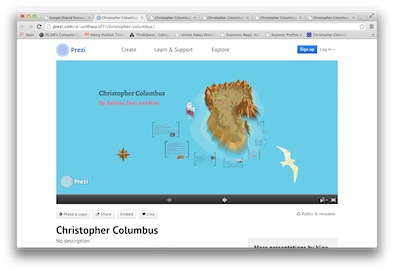 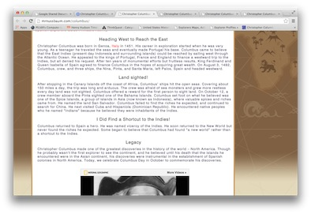 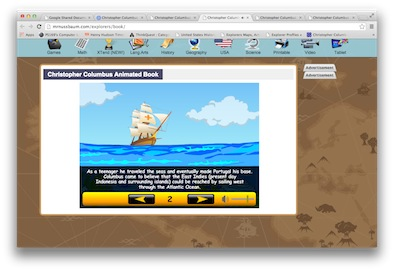 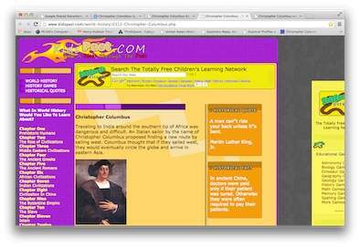 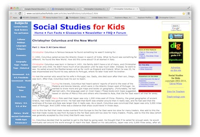
Henry Hudson
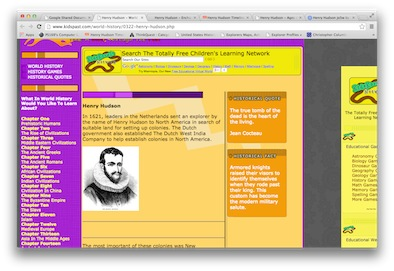 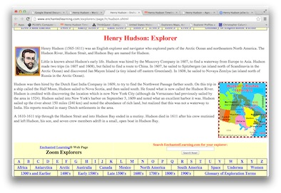 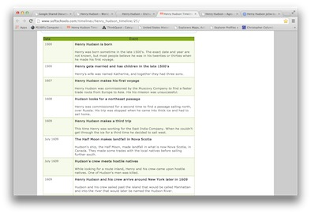 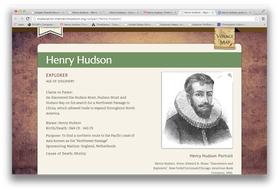 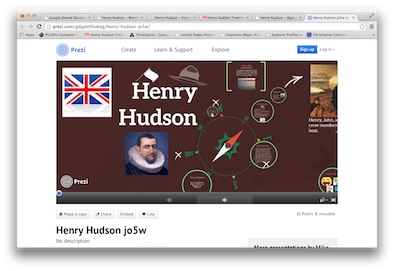
Samuel De Champlain
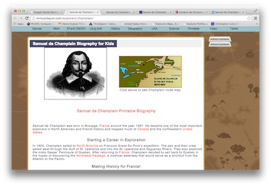 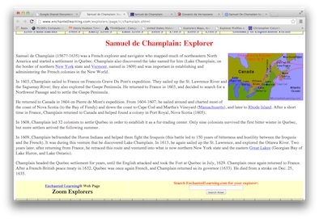 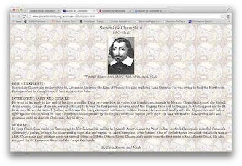 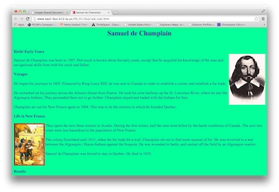 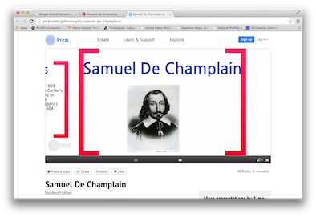
Giovanni Da Verrazzano
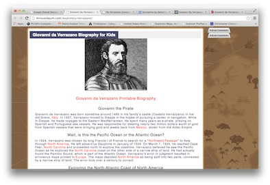 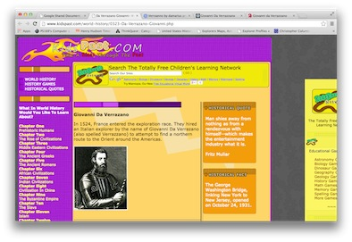 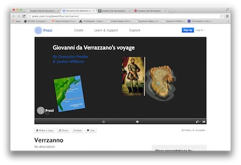 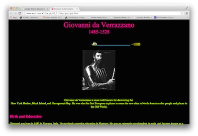 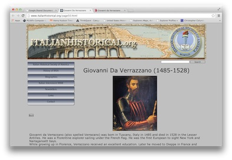
Back to School Portal